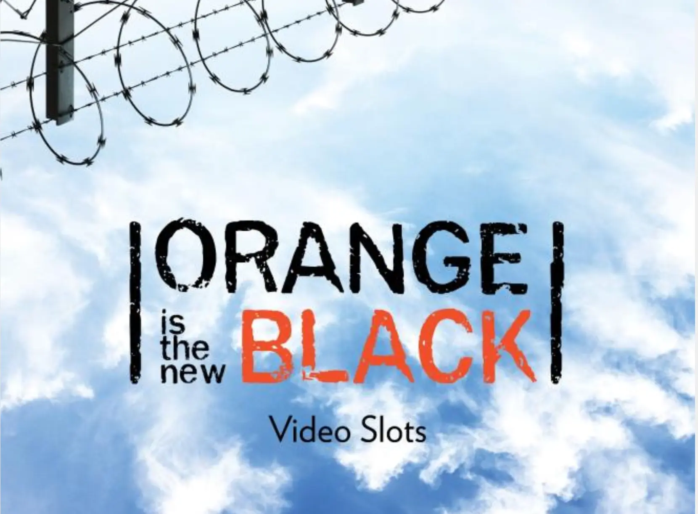
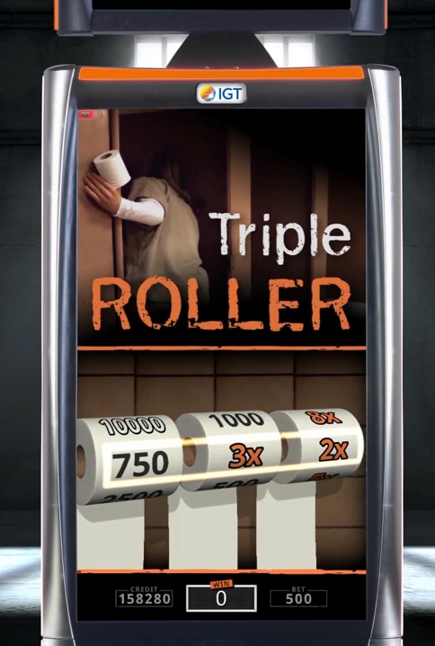
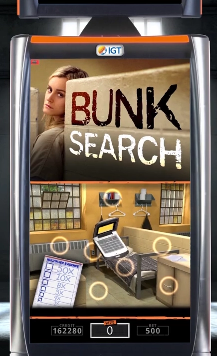
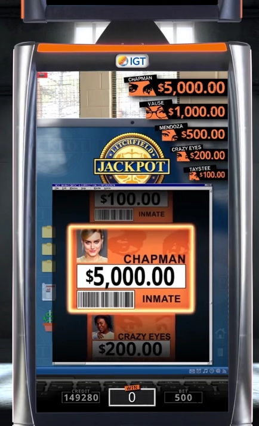
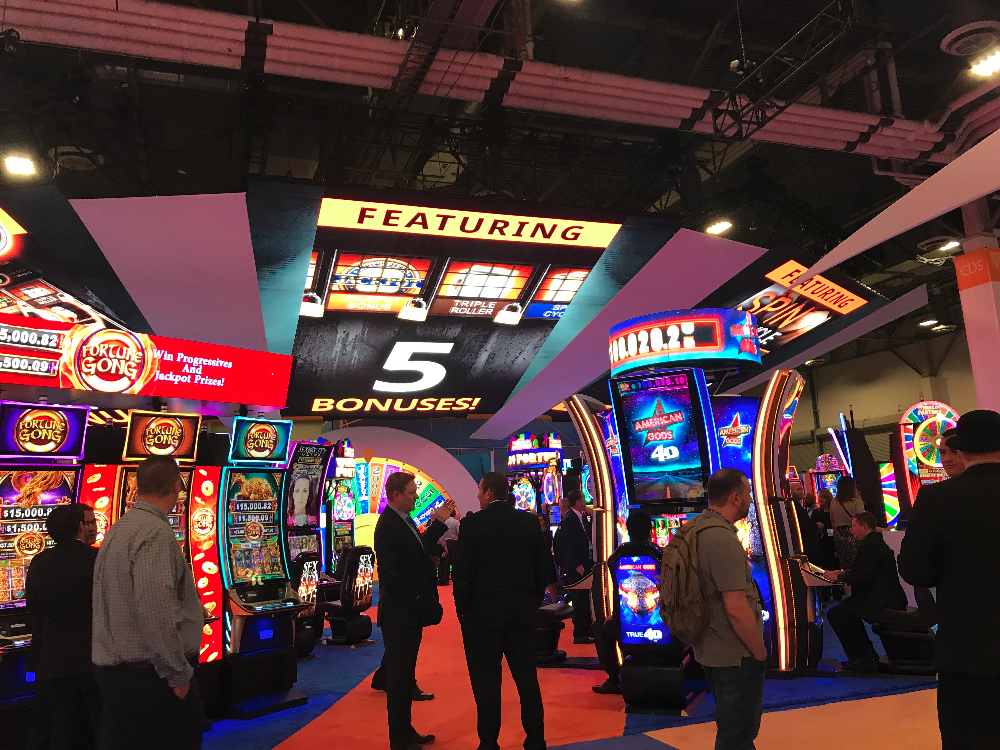

Orange Is The New Black Video Slot Machine
Project Date: October 2017 - April 2018
Do you ever look back on a project and remember how everything came together so perfectly? That was my first thought when I think back on building this game. Orange Is the New Black was my first full-time project at IGT and was the second game that IGT produced for the brand. As the second engineer on the game, I got to work with another staff-level engineer to complete my half of the game. This game had 5 distinct bonuses that are themed to the tv show. I was responsible for 3 of them (see the list below). Here's a short marketing video for the game.
Triple Roller
While this bonus doesn't take long to complete, the visual presentation was fairly complicated.
The 3D rendered toilet paper rolls act as virtual stepper reels that spin and stop one at a time to award a base credit amount and multiplicative multipliers (i.e. 3x & 2x = 6x). Never did I think I would spend so much time looking at TP at work, but the "reels" subtly shrink as the waiving toilet paper falls off the backside.
The shifting by numbers isn't actually on the toilet paper model. Instead, we utilized a render texture to make it look like the numbers were printed on the roll (dimple pattern and all).

Bunk Search
The bunk search is probably my favorite bonus in the game.
The player is presented with a 3D bunk scene from the show and has to find the contraband hidden in any of the highlighted areas. As the player picks potential hiding places, various voiceovers from the game yell out to encourage the player to pick faster. As the player finds contraband (like the cellphone in the picture), it flies out of its hiding spot and toward the multiplier ladder. Each item moves the player up as a felt tip pen crosses off the older multiplier. The text pulses as the player moves up towards the top multiplier. Everything from the subtle animations that each hiding spot plays as the item flies out, to crossing items off on the bag create a sense the player is really in the jail cell.

Litchfield Jackpot
If you ever get to play this bonus, YOU'RE IN THE MONEY!
The player gets to spin the wheel that consists of inmate cards with the jackpots listed on them. The wheel is actually all controlled through code. The closer the cards get to the middle, the bigger the grow, and the glow around the cards gets brighter. After the final card lands, the screen transitions into a movie of the associated character from the show while your money rolls up.
The bonus was designed to look like you were in Warden Caputo's office looking at his computer screen!

Global Gaming Expo 2018 Debut
The game made its public debut at the Global Gaming Expo (G2E) in Las Vegas in October 2018.
I was lucky enough to get a chance to go to the show to show off the game!

The game was even featured on the giant overhead screen!
